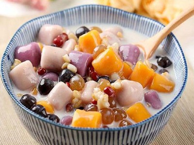

|  |
Food's name: Sweet potato tea▸ Ingredients:
▸ Time to prepare: 40 minutes ▸ Approx quantity: servings for 4 people |
▸ Detailed recipe:
- Mix glutinous rice flour, rice flour with 1/2 teaspoon of salt, then put the potatoes in the pot.
Then add about 50 - 60 ml of water and form the dough into small balls
- Put coconut milk, 1/2 teaspoon salt with 50ml water in a pot and cook until it boils, then lower the heat
- Put another pot of water until it boils, then add the flour to boil
- When the dough balls rise, take them out and put them in the cooking pot of coconut milk,
then add the coconut jelly and cook for about 5-7 minutes.
=> That's it, you've got yourself a delicious and nutritious bowl of tea.
▸ Calories and related information: